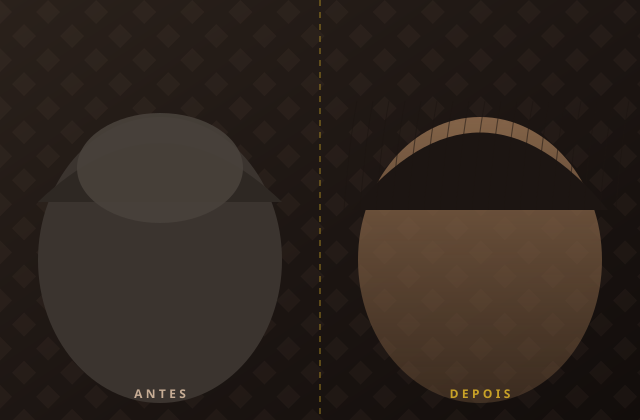
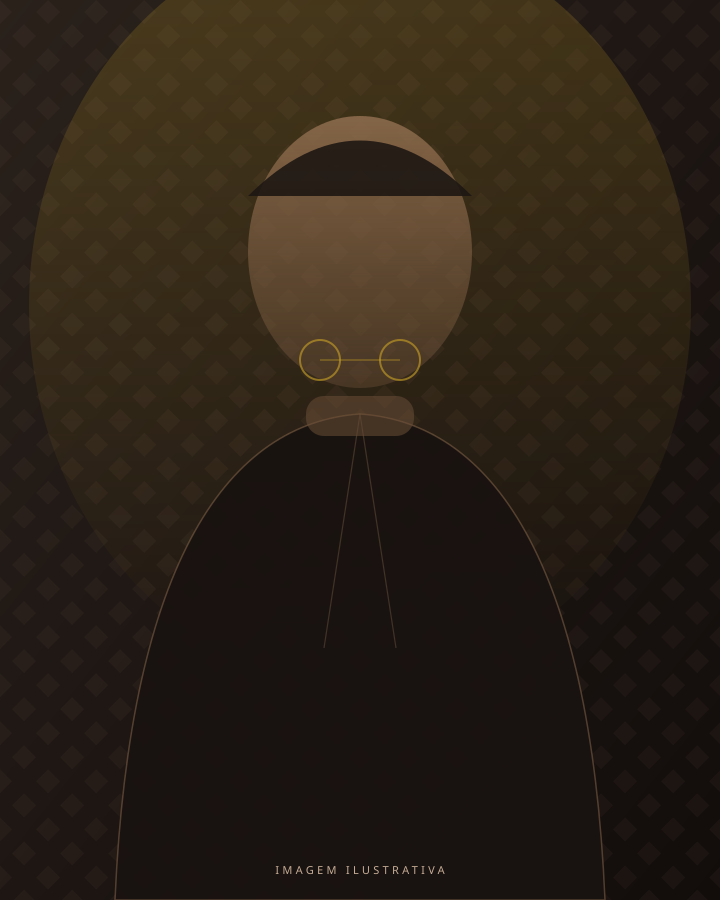
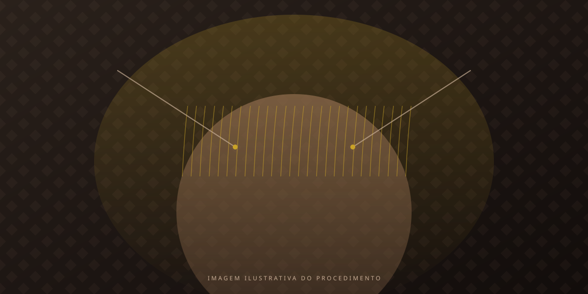
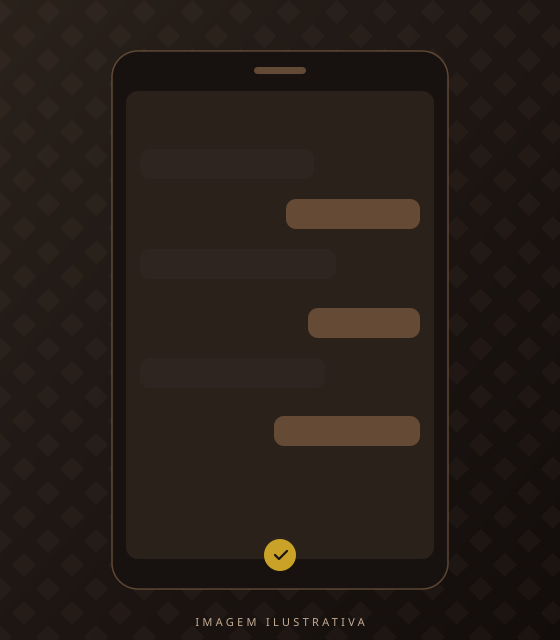

Antes vs. DepoisMáxima densidade e precisão cirúrgica
Enxertos posicionados fio a fio, no ângulo e na direção do crescimento original. Densidade que sustenta o penteado, não só a foto.
CRM-SP 216712 · Atria Medical Center · Itaim Bibi, São Paulo
Transplante capilar FUE conduzido pessoalmente pelo Dr. Gabriel Belnuovo. Sem procedimento delegado a técnicos, sem promessa de número mágico de fios: um plano cirúrgico desenhado para o seu rosto e a sua idade.

Cirurgião responsávelQuem avalia é quem opera. O caso não muda de mãos.
Paciente por dia cirúrgicoAgenda fechada para dedicar o dia inteiro a um único caso.
FUE, fio a fioExtração folicular sem corte linear e sem pontos.
Meses de acompanhamentoO pós-operatório é parte do procedimento, não um extra.
O método
Na maior parte das clínicas de grande volume, o médico desenha e sai da sala. A extração e a implantação ficam com técnicos. É assim que aparecem linhas frontais artificiais, densidade irregular e a sensação de "não parece meu".
O Dr. Gabriel Belnuovo trabalha no caminho oposto. Ele conduz pessoalmente cada etapa: a primeira consulta, o desenho capilar, a cirurgia e o acompanhamento até o resultado final aparecer.
Mais do que estética, é sobre voltar a se reconhecer no espelho.
Detalhista e atualizado com as técnicas mais modernas de tricologia cirúrgica, ele une precisão médica e leitura estética para entregar um resultado natural, definitivo e coerente com o seu rosto.
Como funciona o procedimentoResultados
Um bom transplante capilar não chama atenção para si. Ele devolve a linha que existia antes, respeitando ângulo, direção e densidade de cada região do couro cabeludo.

Antes vs. DepoisEnxertos posicionados fio a fio, no ângulo e na direção do crescimento original. Densidade que sustenta o penteado, não só a foto.
A linha é calculada a partir das suas proporções faciais e do seu histórico de calvície, com irregularidade proposital nas bordas. É o que separa o natural do "implantado".
A técnica FUE extrai folículo por folículo com punch de precisão. A área doadora fica sem corte linear e permite cabelo curto no futuro.
Os folículos transplantados vêm de uma área geneticamente resistente à queda. Uma vez estabelecidos, seguem crescendo como cabelo seu, porque são.
Análise do seu caso pelo WhatsApp, sem custo e sem compromisso.
Técnica
FUE significa extração de unidade folicular. Em vez de remover uma faixa de couro cabeludo, o cirurgião retira folículo por folículo da área doadora e os reimplanta um a um na região de rarefação.

O Dr. Gabriel realiza pessoalmente cada procedimento, com foco em alta densidade e resultado duradouro. Nenhuma etapa crítica é passada adiante.
Em casos selecionados é possível operar sem raspar toda a cabeça. A técnica No Shave FUE oferece mais discrição na recuperação e é avaliada caso a caso, com honestidade sobre os limites.
Pré-avaliação gratuita, consulta médica aprofundada, exames, planejamento cirúrgico e acompanhamento pós-operatório. Etapas definidas, prazos claros e suporte real.
Pacientes
Pedimos depoimentos apenas quando o resultado já está consolidado. Antes disso, qualquer avaliação é sobre expectativa, não sobre resultado.
"Eu tinha medo de sair com cara de quem fez transplante. Passaram oito meses e ninguém no trabalho comentou nada. Só disseram que eu estava com outra aparência."
"Fiz três consultas antes. Foi a única em que o próprio médico me explicou o que não era possível fazer no meu caso. Isso me deu confiança para marcar."
"Voltei ao escritório no quarto dia. A parte que mais me surpreendeu foi o pós: mandei foto toda semana e sempre tive resposta do próprio Dr. Gabriel."
Etapas
Quatro etapas, nenhuma surpresa. Você sabe o que acontece em cada uma antes de assinar qualquer coisa.
Você envia fotos pelo WhatsApp e recebe uma análise inicial do seu caso: se há indicação cirúrgica, qual a ordem de grandeza do procedimento e quais dúvidas resolver antes de vir ao consultório.
Avaliação presencial da calvície, classificação do padrão de queda, definição do design capilar e solicitação de exames. É aqui que o plano cirúrgico ganha número, área e prazo.
Retorno à rotina em poucos dias, primeiros fios entre o terceiro e o quarto mês e resultado consolidado por volta do décimo segundo. Com acompanhamento do próprio cirurgião em todo o percurso.
Localização
Próximo passo

O primeiro passo não é uma cirurgia. É uma conversa. Envie suas fotos pelo WhatsApp e receba uma leitura honesta do seu caso, inclusive se a resposta for "ainda não é o momento".
Sua transformação começa com uma mensagem. Nada é cobrado nesta etapa.
Falar no WhatsApp agora(11) 98929-4956 · Resposta em horário comercial
Dúvidas
Sim, para os fios transplantados. Os folículos são retirados de uma área geneticamente resistente à ação hormonal, geralmente a nuca e as laterais. Uma vez estabelecidos, eles seguem crescendo por toda a vida. Isso não impede que os fios originais ao redor continuem a rarear, e é justamente por isso que o planejamento considera a evolução futura da sua calvície, não apenas a foto de hoje.
A técnica FUE não usa corte linear, então não há a cicatriz em faixa das técnicas antigas. A extração deixa micropontos na área doadora, que cicatrizam em poucos dias e ficam imperceptíveis a olho nu, permitindo usar cabelo curto no futuro.
Não. O procedimento é feito com anestesia local associada a sedação leve. O desconforto se concentra no momento da aplicação da anestesia, que dura poucos minutos. Durante as horas seguintes você fica acordado, confortável, com pausas programadas para se alimentar e ir ao banheiro.
Os fios transplantados caem nas primeiras semanas, o que é esperado e faz parte do ciclo. O crescimento começa entre o terceiro e o quarto mês, ganha volume entre o sexto e o oitavo e atinge o resultado consolidado por volta do décimo segundo mês. Qualquer promessa de resultado final em poucas semanas é comercialmente conveniente e biologicamente falsa.
A maioria dos pacientes retoma atividades administrativas entre o terceiro e o quinto dia. Exercícios de alto impacto, natação, sauna e exposição solar direta são liberados progressivamente, com orientação individual no seu retorno.
Sim. Trabalhamos com parcelamento em até 12x sem juros no cartão, além de outras condições apresentadas na consulta. O valor depende do número de unidades foliculares e da extensão da área a ser tratada, por isso só é definido após a avaliação médica.
Sim, do início ao fim. O Dr. Gabriel Belnuovo, CRM-SP 216712, executa pessoalmente o desenho, a extração e a implantação, apoiado por uma equipe de enfermagem. Essa é a diferença central em relação a clínicas de alto volume, onde o médico frequentemente apenas supervisiona.
Exames laboratoriais são solicitados na consulta para garantir a segurança do procedimento. Quanto ao afastamento, a recomendação usual é reservar de três a cinco dias. Emitimos atestado quando necessário.
Em centro cirúrgico próprio para o procedimento, no Atria Medical Center, na Avenida Brigadeiro Faria Lima, 3.900, Itaim Bibi, São Paulo. Ambiente com estrutura completa de monitorização e suporte.
Em geral a partir dos 25 anos, quando o padrão de calvície já se mostra mais estável. Em pacientes mais jovens a avaliação é mais criteriosa: operar cedo demais pode gerar um desenho que não envelhece bem. Nesses casos, muitas vezes a conduta correta é estabilizar clinicamente primeiro e operar depois.
Depende de três fatores: a área a ser coberta, a densidade e a qualidade da sua área doadora, e a densidade final desejada. Números prometidos por telefone, antes de examinar o couro cabeludo, são estimativas de venda. O seu número real sai da consulta, com tricoscopia e medição da doadora.
Ficou com uma dúvida que não está aqui?
Quero tirar minhas dúvidas